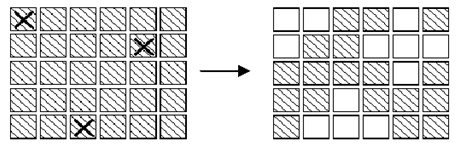
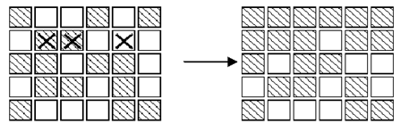

有些问题没有明确的区间限制，可根据问题的具体实际进行建模分析，再确定穷举对象及范围进行穷举。
【例7】质数幻方
通常的n阶幻方是由1，2，…，n2构成的各行、各列与两对角线之和均相等n行n列方阵。质数幻方则全是由质数构成的各行、各列与两对角线之和均相等的方阵。
例如： 17 113 47
89 59 29
71 5 101
就是一个3阶质数幻方。方阵中9个质数的总和为531。
试寻求9个质数，构造一个3阶质数幻方，使得该质数方阵中3行、3列与两对角线上的3个质数之和均不超过1000。
你能找出多少种这样的幻方呢？
（1）编程思路。
本题除了限定9个质数的总和不超过3000外，并没有明确给出穷举的对象和区间范围。因此，需要仔细分析后，确定需要穷举的变量及范围。
设幻方正中间数为n，9个质数的总和为s，每行的和为s/3。由于
（中间一行）+（中间一列）+ 2 *（两条对角线）= 2s
（上下两行）+ （左右两列）= 4s/3
两式相减即得
6n=2s/3 所以 n=s/9
这意味着凡含n的行或列或对角线的三个数中，除n之外的另两数的和为n的两倍（s/3-s/9=2s/9），它们与n相差等距。
为此，可设3阶幻方为：
n-x n+w n-y
n+z n n-z
n+y n-w n+x
同时设定方阵的两对角线的三数为大数在下（即x，y>0），下面一行三数为大数在右（即x>y）。这样设定是避免重复统计解。
显见，上述3×3方阵的中间一行，中间一列与两对角线上三数之和均为3n。要使左右两列，上下两行的三数之和也为3n，当且仅当
z= x-y
w= x+y （x>y）
由于填入幻方的9个质数中不能有偶质数2，因而x，y，z，w都只能是正偶数。
定义一个数组a[3000]，用于保存一个质数表，为后面的判断提供依据。数组元素a[k]=1表示k为质数，a[k]=0表示k不是质数。
对于27~3000之间的整数s，如果存在总和为s的质数幻方，则s应为中间质数n的9倍，且s不能为偶数（否则中间数n为偶数，一定不是质数）。若a[s/9]==0，则中间数n不是质数，显然不存在总和为s的质数幻方，直接进行下次穷举（s=s+18）。
设幻方中的质数下界为c，上界为d，则有
c=3
d=2n-3 （因为 d+n+c= s/3 = 3n）
由于 n-y≥3 （n+y）+n+（n-y）=s/3
可得 2n+y = s/3 - (n-y) ≤ s/3 - 3
即 y ≤ s/3 - 2n-3 = 3n-2n-3 =n-3
同理可得 x≤s-2n-3=n-3
这样，可以在区间[2，n-3] 中穷举偶数y，在区间[y+2，n-3]穷举偶数x，并按z= x-y、w= x+y求得z，w。
若出现x=2y，将导致z=y，方阵中出现两对相同的数，显然应予排除。
由于n-w是9个数中最小的，n+w是9个数中最大的。若n-w<c或n+w>d，已超出质数的[c，d]界限，也应予以排除。
按穷举变量s、x和y确定了方阵中的9个数后，检测方阵中其他8个数n-x，n+w，n-y，n+z，n-z，n+y，n-w，n+x是否同时为质数，若8个数中存在非质数，进行下次穷举；否则，已找到一个三阶质数幻方解，按方阵格式输出并用变量cnt统计基本解的个数。
（2）源程序及运行结果
#include <iostream>
#include <iomanip>
using namespace std;
int main()
{
int c,d,k,n,t,t1,t2,s,w,x,y,z,cnt;
int a[3000];
for(k=2;k<3000;k++)
a[k]=1;
for(k=2;k<3000;k++) // 构造质数表，a[k]=1表示k为质数
{
if (a[k]==1)
{
for(t=2*k;t<3000;t+=k)
a[t]=0; // t不是质数，令a[t]=0
}
}
cnt=0;
for (s=27;s<=3000;s+=18)
{
n=s/9;
if (a[n]==0)
continue;
c=3; d=2*n-3;
for(y=2;y<=n-3;y+=2)
for(x=y+2;x<=n-3;x+=2)
{
z=x-y;w=x+y;
if(x==2*y || n-w<c || n+w>d)
continue; // 控制幻方的质数范围
t1=a[n-w]*a[n+w]*a[n-z]*a[n+z];
t2=a[n-x]*a[n+x]*a[n-y]*a[n+y];
if(t1*t2==0) continue; // 控制其余8个均为质数
cnt++;
cout<<"NO :"<<cnt<<endl; // 统计并输出三阶质数幻方
cout<<setw(5)<<n-x<<setw(5)<<n+w<<setw(5)<<n-y<<endl;
cout<<setw(5)<<n+z<<setw(5)<<n<<setw(5)<<n-z<<endl;
cout<<setw(5)<<n+y<<setw(5)<<n-w<<setw(5)<<n+x<<endl;
cout<<"Sum="<<s<<endl;
}
}
cout<<"共有 "<<cnt<<" 个质数幻方"<<endl;
return 0;
}
【例8】熄灯问题
有一个由按钮组成的矩阵，其中每行有6个按钮，共5行。每个按钮的位置上有一盏灯。当按下一个按钮后，该按钮以及周围位置（上边、下边、左边、右边）的灯都会改变一次。即如果灯原来是点亮的，就会被熄灭；如果灯原来是熄灭的，则会被点亮。在矩阵角上的按钮改变3 盏灯的状态；在矩阵边上的按钮改变4 盏灯的状态；其他的按钮改变5盏灯的状态。
在下图1 中，左边矩阵中用X 标记的按钮表示被按下，右边的矩阵表示灯状态的改变。与一盏灯毗邻的多个按钮被按下时，一次操作会抵消另一次操作的结果。在图2 中，第2行第3、5列的按钮都被按下，因此第2 行、第4列的灯的状态就不改变。根据上面的规则，我们知道：
1）第2次按下同一个按钮时，将抵消第1 次按下时所产生的结果。因此，每个按钮最多只需要按下一次。
2）各个按钮被按下的顺序对最终的结果没有影响。
3）对第1行中每盏点亮的灯，按下第2 行对应的按钮，就可以熄灭第1 行的全部灯。如此重复下去，可以熄灭第1、2、3、4 行的全部灯。同样，按下第1、2、3、4、5 列的按钮，可以熄灭前5列的灯。

图3-1 按钮的按下操作改变灯的状态

图3-2 两次按钮的按下操作的结果被抵消
编写一个程序，输入一个5行6列的矩阵，矩阵中的元素值是每盏灯的初始状态，其值是0 或1。0表示灯的初始状态是熄灭的，1表示灯的初始状态是点亮的。确定需要按下哪些按钮，恰好使得所有的灯都熄灭。输出一个5行6列的矩阵，其中的1表示需要把对应的按钮按下，0则表示不需要按对应的按钮。
（1）编程思路。
定义两个数组state[6][8]和press[6][8]。其中，数组元素state[i][j]表示位置（i, j）上灯的初始状态：1表示灯是被点亮的，0表示灯是熄灭的。press[i][j]表示为了让全部的灯都熄灭，是否要按下位置（i, j）上的按钮：1表示要按下，0表示不用按下。
问题中的矩阵一个5行6列的矩阵，由于在矩阵角上的按钮改变3 盏灯的状态，在矩阵边上的按钮改变4 盏灯的状态，矩阵中间的按钮改变5盏灯的状态。为统一处理，定义的数组表示了一个6×8 的矩阵，即在最上行加了一个虚拟行，最左和最右列两边各加一列。这样角上和边上的按钮都变成了中间按钮了，程序中无需再区分是否是边界还是内部，用统一的代码处理。
由于第0 行、第0 列和第7 列不属于按钮矩阵的范围，没有按钮，因此设定这些位置上的灯总是熄灭的、按钮也不用按下。即数组press[6][8]中的第0行、第0列和第7列各元素值始终为0。用如下两个循环进行初始化。
for (row = 0; row < 6; row++)
press[row][0] = press[row][7] = 0;
for (col = 1; col < 7; col++ )
press[0][col] = 0;
其它30个位置上的按钮是否需要按下是未知的。因此数组press 共有230种取值。在这么大的一个空间中进行穷举搜索，显然代价太大、不合适。可从熄灯的规则中，发现答案中的元素值之间的规律。不满足这个规律的数组press，就没有必要进行判断了。
根据熄灯规则，如果矩阵press 是寻找的答案，那么按照press的第一行（元素press[1][1]~ press[1][6]）对矩阵中的按钮操作之后，此时在矩阵的第一行上：
1）如果位置（1，j）上的灯是点亮的（即state[1][j]=1），则要按下位置（2，j）上的按钮，即press[2][j]一定取1。
2）如果位置（1，j）上的灯是熄灭的（即state[1][j]=0），则不能按位置（2，j）上的按钮，即press[2][j]一定取0。
这样依据press的第一、二行操作矩阵中的按钮，才能保证第一行的灯全部熄灭。而对矩阵中第三、四、五行的按钮无论进行什么样的操作，都不影响第一行各灯的状态。依此类推，可以确定press 第三、四、五行的值。
因此，一旦确定了press 第一行的值之后，为熄灭矩阵中第一至四行的灯，其他行的值也就随之确定了。press 的第一行共有26种取值，分别对应唯一的一种press取值，使得矩阵中前四行的灯都能熄灭。只要对这26种情况进行判断就可以了。如果按照其中的某个press对矩阵中的按钮进行操作后，第五行的所有灯也恰好熄灭，则找到了答案。
因此，程序中需要做的是对press数组第一行的元素press[1][1]~ press [1][6]的各种取值情况进行穷举，然后根据press 第一行和state数组，按照熄灯规则计算出press其他行的值，使得矩阵第1~4 行的所有灯都熄灭。计算方法为：
for (row = 1; row < 5; row++)
for (col=1; col < 7; col++)
press[row+1][col] =(state[row][col] + press[row][col] + press[row-1][col]
+ press[row][col-1] + press[row][col+1]) % 2;
（2）源程序及运行结果。
#include <iostream>
using namespace std;
bool guess(int state[6][8], int press[6][8])
{
int row, col;
for (row = 1; row < 5; row++)
for (col=1; col < 7; col++)
press[row+1][col] =(state[row][col] + press[row][col] + press[row-1][col]
+ press[row][col-1] + press[row][col+1]) % 2;
for(col=1; col<7; col++)
if ((press[5][col-1] + press[5][col] + press[5][col+1] + press[4][col]) % 2 != state[5][col])
return false;
return true;
}
int main()
{
int row, col;
int state[6][8], press[6][8];
for (row = 0; row < 6; row++)
press[row][0] = press[row][7] = 0;
for (col = 1; col < 7; col++ )
press[0][col] = 0;
for (row = 1; row < 6; row++)
for (col = 1; col < 7; col++)
cin>>state[row][col];
for (col = 1; col < 7; col++)
press[1][col] = 0;
while (guess(state,press) == false )
{
press[1][1]++;
col = 1;
while (press[1][col] > 1 )
{
press[1][col] = 0;
col++;
press[1][col]++;
}
}
cout<<"Output is :"<<endl;
for ( row = 1; row < 6; row++ )
{
for ( col = 1; col < 7; col++ )
cout<<press[row][col]<<" ";
cout<<endl;
}
return 0;
}